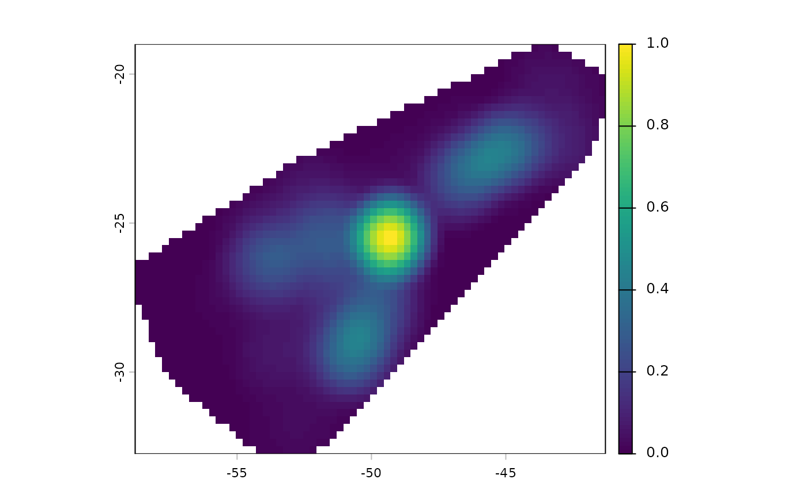
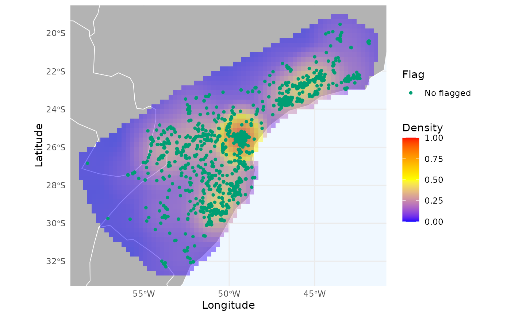

This function creates density heatmaps using kernel density estimation. The algorithm is inspired by the SpatialKDE R package and the "Heatmap" tool from QGIS. Each occurrence contributes to the density surface within a circular neighborhood defined by a specified radius.
Usage
spatial_kde(
occ,
long = "decimalLongitude",
lat = "decimalLatitude",
radius = 0.2,
resolution = NULL,
buffer_extent = 500,
crs = "epsg:4326",
raster_ref = NULL,
kernel = "quartic",
scaled = TRUE,
decay = 1,
mask = NULL,
zero_as_NA = FALSE,
weights = NULL
)Arguments
- occ
(data.frame, data.table, or SpatVector) a data frame or SpatVector containing the occurrences. Must contain columns longitude and latitude.
- long
(character) the name of the column in
occthat contains the longitude values. Default is"decimalLongitude".- lat
(character) the name of the column in
occthat contains the latitude values. Default is"decimalLatitude".- radius
(numeric) a positive numeric value specifying the smoothing radius for the kernel density estimate. This parameter determines the circular neighborhood around each point where that point will have an influence. See details. Default is 0.2.
- resolution
(numeric) a positive numeric value specifying the resolution (in degrees or meters, depending on the
crsprovided) of the resultant raster heatmap. Required ifraster_refis not provided. Default is NULL.- buffer_extent
(numeric) width of the buffer (in kilometers) to draw around the occurrences to define the area for computing the heatmap. Default is 500.
- crs
(character) the coordinate reference system of the raster heatmap (see ?terra::crs). Default is "epsg:4326". Only applicable if
raster_refis not provided.- raster_ref
(SpatRaster) an optional raster to use as reference for resolution, CRS, and extent. Default is NULL.
- kernel
(character) type of kernel to use. Available kernerls are "uniform", "quartic", "triweight", "epanechnikov", or "triangular". Default is "quartic".
- scaled
(logical) whether to scale output values to vary between 0 and
Default is TRUE.
- decay
(numeric) decay parameter for "triangular" kernel. Only applicable if
kernel = triangular.- mask
(SpatRaster or SpatExtent) optional spatial object to define the extent of the area for the heatmap. Default is NULL, in which case the extent is derived from
raster_ref(if provided) or from the convex hull of occurrences plusbuffer_extent.- zero_as_NA
(logical) whether to convert regions with value 0 to NA. Default is FALSE.
- weights
(numeric) optional vector of weights for individual points. Must be the same length as the number of occurrences in
occ. Default is NULL.
Details
The radius parameter controls how far the influence of each observation
extends. Smaller values produce fine-grained peaks; larger values produce
smoother, more spread-out heatmaps. Units depend on the CRS: degrees for
geographic coordinates (default), meters for projected coordinates.
If raster_ref is not provided, the extent is calculated from the convex
hull of occ plus buffer_extent.
Kernels define the weight decay of points:
"uniform" = constant, "quartic"/"triweight"/"epanechnikov" = smooth, and
"triangular" = linear decay (using decay parameter).
References
Hart, T., & Zandbergen, P. (2014). Kernel density estimation and hotspot mapping: Examining the influence of interpolation method, grid cell size, and radius on crime forecasting. Policing: An International Journal of Police Strategies & Management, 37(2), 305-323.
Nelson, T. A., & Boots, B. (2008). Detecting spatial hot spots in landscape ecology. Ecography, 31(5), 556-566.
Chainey, S., Tompson, L., & Uhlig, S. (2008). The utility of hotspot mapping for predicting spatial patterns of crime. Security journal, 21(1), 4-28.
Caha J (2023). SpatialKDE: Kernel Density Estimation for Spatial Data. https://jancaha.github.io/SpatialKDE/index.html.
Examples
# Load example data
data("occ_flagged", package = "RuHere")
# Remove flagged records
occ <- remove_flagged(occ_flagged)
# Generate heatmap
heatmap <- spatial_kde(occ = occ, resolution = 0.25, buffer_extent = 50,
radius = 2)
# Plot heatmap with terra
terra::plot(heatmap)

# Plot heatmap with ggplot
ggmap_here(occ = occ, heatmap = heatmap)
